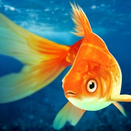
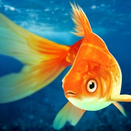
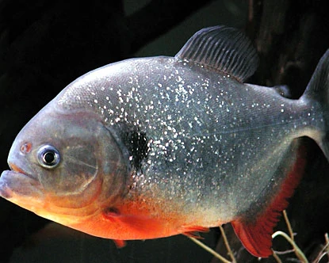

Mr. Tickles
Gold Fish
2 inches
Mexico
Kale chips
Gold Fish
2 inches
Mexico
Kale chips
Piranha
7 inches
Brazil
Gold Fish
Siamese Fighting Fish

2 inches
Cambodia
Fish Flakes
>> Sustainable fishing ensures that fisheries continue to thrive in marine and freshwater habitats. People have fished sustainably for thousands of years. The Tagbanua people of the Philippines, above, hunt for specific species at different times of the year, which maintains healthy stocks of different fish. They also use sustainable methods such as spears.
>> Cast-net fishing is another sustainable fishing technique. Cast nets, like this one used by fishers in Kenh Ga, Vietnam, require skilled fishers, but can catch dozens or even hundreds of fish. Cast-net fishing is a traditional technique for subsistence fishers, but can also be employed by commercial enterprises.
>> Traditional rod-and-reel methods, such as fly fishing, above, is a sustainable fishing method. Rods and reels come in different shapes and sizes, allowing recreational and commercial fishers to target a wide variety of fish species in both fresh and saltwater.

Mexico

Brazil

Cambodia